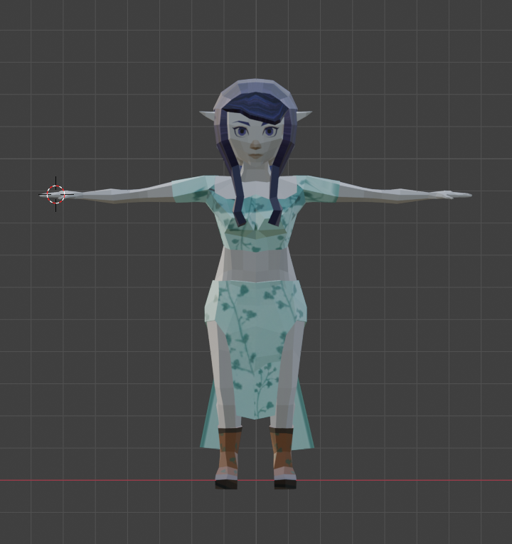
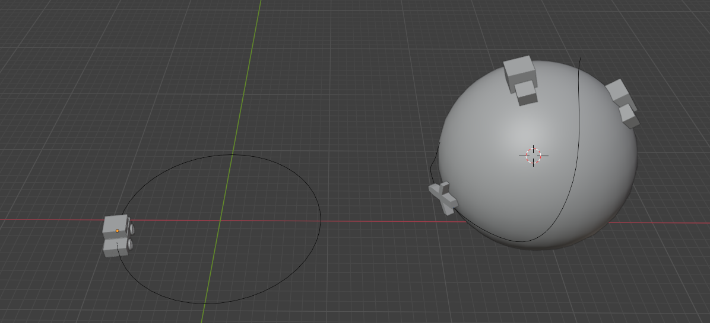
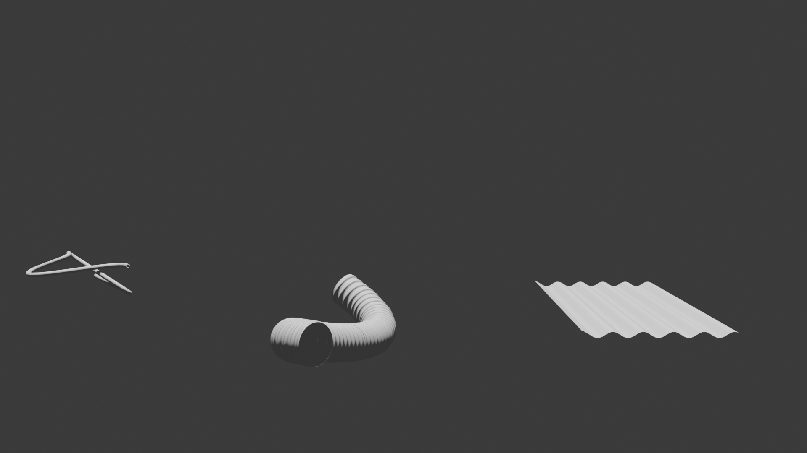
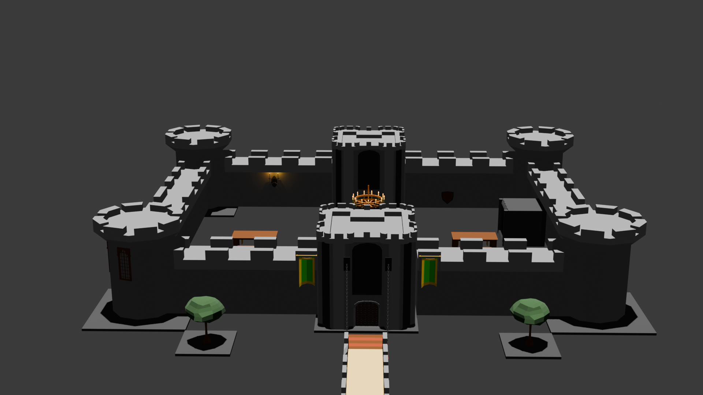

Blender Projects
Here are some of my first projects, still more to come though!

My very first low poly character.

Learning in Blender how to use follow path.

These were some props I made for my sister.

My first low poly props, made in October.